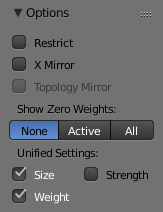

选项¶
See the Overlay & Appearance options.
选项¶

绘制选项。¶
权重绘制选项修改整体笔刷行为：
- 限定
This option limits the influence of painting to vertices (even with weight 0) belonging to the selected vertex group.
- X 向镜像
在具有对称名称的组上使用X-mirror选项进行镜像绘制，例如扩展名为“.R”/“.L”或“_R”/“_L”。如果一个组没有镜像副本，它将在激活组本身上对称地绘制。更多命名规则相关信息请阅读 编辑骨架: 命名规则。
- 拓扑镜像
Use topology-based mirroring, for when both sides of a mesh have matching mirrored topology. See here for more information.
- 显示零权重
以黑色显示未引用和零权重区域（默认情况下）。这有助于确定已绘制的权重非常低的区域。
- None
停用。
- 活动项
仅仅激活的组。
- 全部
所有的组。
- 统一设置
可以将笔刷的 尺寸，强度 和 权重 设置为在不同的刷子上共享，而不是每个刷子。